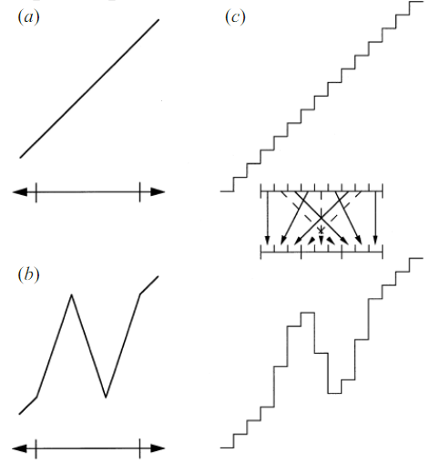
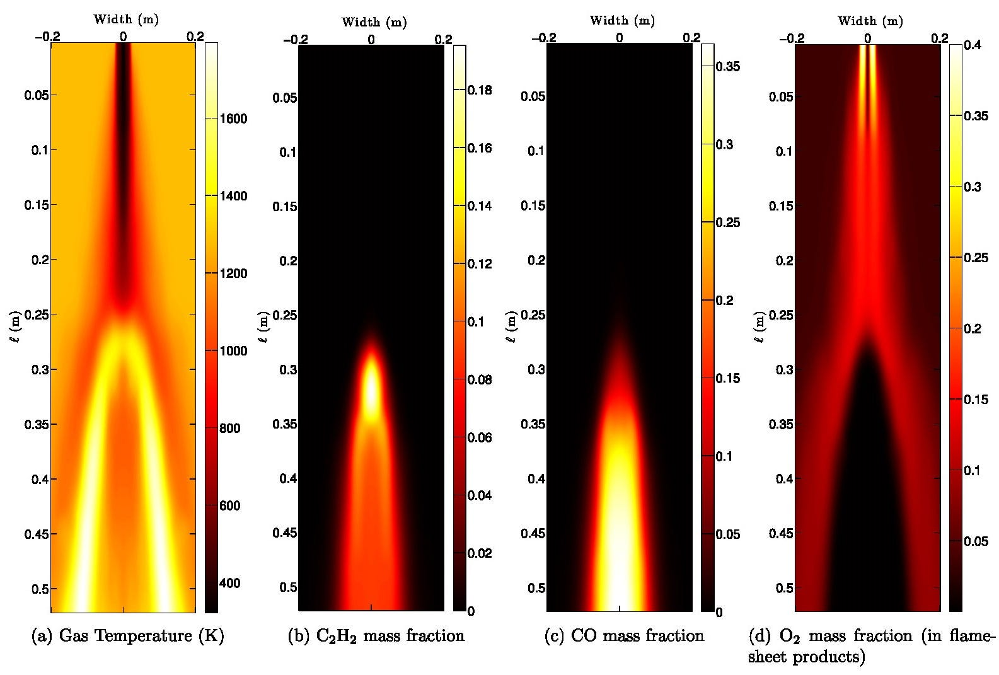

Scientific computing · Turbulence modeling
One-Dimensional Turbulence (ODT) Model
Turbulence, an ever-present phenomenon in nature, is a complex, chaotic, and non-linear process. While it has been extensively studied for centuries, accurately predicting and simulating turbulent flows remains an ongoing challenge for scientists and engineers. There are many advancements in the field of Computational Fluid Dynamics (CFD) to simulate turbulent flows:
- Direct Numerical Simulation (DNS) is a computational method that accurately resolves all the scales of turbulent flow, providing a detailed and comprehensive understanding of turbulence at the expense of high computational costs.
- Large Eddy Simulation (LES) is a computational technique that models large-scale turbulent structures while filtering out smaller scales, offering a balance between computational efficiency and the accurate representation of turbulent flow dynamics.
- Reynolds-Averaged Navier-Stokes (RANS) is a widely used turbulence modeling approach that simplifies the governing equations by averaging the flow variables over time, enabling efficient simulations of complex turbulent flows at the cost of reduced accuracy in capturing transient phenomena.
One of the more recent and promising advancements in this field is the One-Dimensional Turbulence (ODT) model. ODT provides a unique approach to modeling turbulent flow, offering insights into the complex world of turbulence.
In this article, we will explore the fundamentals of the ODT model, its applications, and how it has revolutionized our understanding of turbulent flows.
The One-Dimensional Turbulence Model: A Closer Look
First proposed by Dr. Alan Kerstein in the late 1990s, the One-Dimensional Turbulence (ODT) model is a stochastic model to simulate turbulent flows. Unlike conventional models, ODT reduces the spatial dimensionality of the problem to one, allowing for the study of turbulence at significantly reduced computational costs.
Key Features of the ODT Model
- Spatial Dimension Reduction: By reducing the spatial dimensionality to one, the ODT model greatly simplifies the turbulent flow problem, making it more computationally efficient than traditional three-dimensional models.
- Stochastic Approach: The ODT model uses random processes, or “triplet maps,” to simulate the complex interactions between turbulent eddies. This stochastic approach provides an accurate representation of turbulent energy transfer and dissipation.
- Adaptive Mesh: ODT employs an adaptive mesh, which automatically refines or coarsens in response to local flow conditions. This feature ensures that the model captures the essential features of the turbulent flow, providing high-fidelity results.
Applications of the ODT Model
The ODT model has been successfully applied to a wide range of turbulent flow problems, including:
- Combustion: ODT has been used to study turbulent premixed and non-premixed combustion, providing insights into flame stability, pollutant formation, and heat transfer.
- Atmospheric Flows: ODT has been applied to model atmospheric boundary layers, cloud microphysics, and pollutant dispersion, leading to a deeper understanding of these complex processes.
- Turbulent Mixing: The model has been utilized to study turbulent mixing in various settings, such as jet mixing, shear layers, and stratified flows.
- Industrial Processes: ODT has been employed to optimize and improve industrial processes like chemical reactors, heat exchangers, and fluidized beds, where turbulent flows play a crucial role.
Revolutionizing Our Understanding of Turbulent Flows
The One-Dimensional Turbulence model has significantly advanced our understanding of turbulent flows. By reducing computational complexity, ODT has made it possible to study intricate turbulent phenomena that were previously inaccessible due to computational limitations.
Moreover, the ODT model's stochastic approach has provided a fresh perspective on the fundamental nature of turbulence, shedding new light on the energy cascade, turbulent mixing, and dissipation processes. The model's adaptability has allowed researchers to explore a wide range of turbulent flow problems, leading to new discoveries and improved understanding in various fields.
Triplet Mapping
The triplet mapping is the heart of the ODT model and has an impact on an initially linear
velocity profile u(y, t).
(a) Initial profile: The velocity profile begins as a linear function of
the spatial variable y and time t.
(b) Velocity profile after applying the triplet map: When the triplet map is applied to a specific interval (denoted by ticks), the velocity profile in that interval is modified, with energy and momentum being redistributed among the subintervals.
(c) Discrete representation of the initial profile: In a discrete representation with nine cells, the triplet map's application illustrates the transformation of the interval into three distinct images. For clarity, dashed arrows indicate the formation of the central image of the original interval.

The triplet map plays a crucial role in simulating turbulent eddy interactions and capturing the complex behavior of turbulent flows in the ODT model. For more information read Alan Kerstein's paper.
To mitigate the influence of stochastic eddies on the final results in the ODT model, an ensemble approach can be employed. By utilizing different random seeds, the same simulation is repeated multiple times, allowing for the capture of various realizations of the turbulent flow. At the end of these simulations, an ensemble average is computed, providing a more robust and representative result that accounts for the inherent variability and randomness of turbulence. This approach helps to minimize the uncertainties associated with the stochastic nature of the ODT model and enhances the reliability of the findings.

Where to Run
Acquiring and utilizing the ODT model involves two primary methods: compiling the source code on your machine or using a pre-installed version on a cloud-computing platform.
- Source Code Compilation: You can clone the ODT source code and compile it on your desired machine. However, the installation process, like many other scientific models, is very complex and is not as straightforward as commercial software. For example, various dependencies and libraries need to be carefully installed, taking into account the infrastructure and operating system of your machine.
- Cloud-Computing Platforms: Another approach is to use a cloud-computing platform where ODT is already installed and ready for use. For example, Amazon Web Services (AWS) offers a pre-configured environment, allowing you to bypass the installation process and focus on running your simulations.